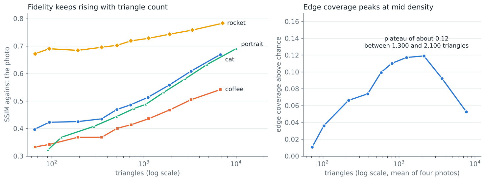
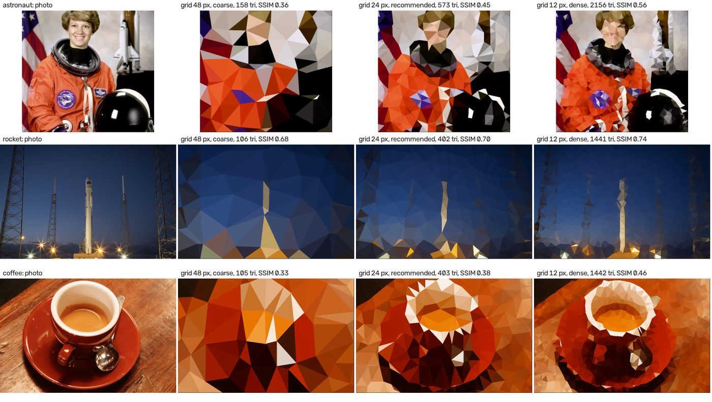

Abstract
low-poly-generator turns a photo into flat-coloured triangles. Many outputs are acceptable and none is
the single correct one, so tests cannot compare against an expected image (the test oracle problem).
This study measures how large run-to-run noise is, which quality checks detect known faults, and, as a
by-product, which grid size and settings best follow a photo's structure.
Results: seed-to-seed variation reaches 0.006 SSIM and 0.3 dB; no fixed pass mark works (SSIM 0.32–0.78); the baseline at 0.005 SSIM / 0.1 dB caught all injected faults and tested sizes in the author-selected set (not a general effectiveness estimate); edge-following peaks at about 16 cells across the long side for every image type. The shortest route, a golden baseline validated by fault injection, is where the study ended up; the appendices give the calibration for the tool's defaults and the journey with its lessons. No people rated the images.
1Intent and status
Intent: decide which image-quality checks lowpoly needs, from measurements
instead of looking at outputs. Along the way the study measured which settings follow the photo best; that
part is Appendix A. How the work unfolded, and what it taught, is Appendix B.
Status: exploratory. No hypotheses were set beforehand.
| State | What |
|---|---|
| Built | The baseline check (tests/test_quality_baseline.py), validated by injecting 21
changes (baseline report). CI uploads the scores of every run and does not fail on them. Ten
metamorphic tests on the mesh and the relief shading
(tests/test_metamorphic.py; no scores involved) |
| Measured | Noise floor of the quality measures; detection of known faults; grid-size sweeps over 14 images, 7 types and 3 sizes, then over 36 images by edge density; ranking of five parameters; a jitter check |
| Proposed, not built | Tests 1 to 4 and 7; test 5 records the scores but does not compare them (see Final design) |
| Not done | A human preference comparison; the parameter study scripts are not committed (the grid
sweep, scripts/grid_sweep.py, is). The package defaults are unchanged |
| How far to trust it | Image-quality and calibration measurements use these images and one machine; platform spread was measured separately on seven CI environments. The injected faults were chosen by the author, so the detection rate is not a general estimate |
2Context
lowpoly turns a photo into an image made from flat-coloured triangles. Triangle size changes the
style, so there is no single correct output. Before this work the four bundled sample outputs were judged by
looking at them. The rest of the test suite checks program behaviour, such as valid geometry and reliable
files (testing strategy).
The test oracle problem
A test needs a way to decide whether a result is correct. That mechanism is the test oracle; the simplest oracle is an expected value. The test oracle problem is the case where no expected value exists or can be had cheaply (Weyuker, 1982, calls such programs "non-testable"; Barr et al., 2015, survey the sources of oracle information).
lowpoly is such a program: point placement is random, many triangle meshes are acceptable for
one photo, and whether an output looks good is a human judgement. A mesh can be valid and repeatable and
still look wrong. A test has to use a weaker, partial oracle:
| Partial oracle | Question it answers | Used here |
|---|---|---|
| Rules every output must obey | Is the mesh valid (tiles the image, Delaunay empty-circle rule, colours in range)? | Property tests |
| A trusted reference version | Does the output match the original script? | Differential test |
| Known input-output relations | If the input changes in a known way, does the output change as expected? | Metamorphic tests |
| Similarity to the source photo | Does a fault move the score beyond noise? | Baseline check |
| Human judgement | Which output do people prefer? | Not done |
Related work
- Golden-image tests. Graphics projects keep reviewed reference images and compare new output with them. Chromium's Gold matches exactly by default, makes tolerance opt-in and warns that it can let a faulty image pass, requires a person to approve new images, and keeps several approved images per test for platform differences (Chromium). Flutter reviews updated reference images in the pull request (Flutter). The baseline check follows this pattern with stored scores instead of stored images.
- Metamorphic testing. Chen et al. (2018) review the technique. For image-processing programs, Mayer and Guderlei (2006) and Guderlei and Mayer (2007) study which relations detect injected faults, and Just and Schweiggert (2011) show with mutation analysis that partial oracles test part of a JPEG2000 encoder and differ between unit and integration level. Segura et al. (2016) survey the field and note that how well a relation works depends on its choice.
- Fault injection. Changing code on purpose to see whether tests notice is mutation analysis (Jia and Harman, 2011). Just et al. (2014) found that detecting mutants goes with detecting real faults, but that some real faults are not coupled to any mutant, so the injected set is a proxy.
- Measures. SSIM is from Wang et al. (2004). Edge lift is boundary recall with a 2 px tolerance, as used for superpixel evaluation (arXiv:1903.07162), with the chance level subtracted. Boundary recall ignores how many boundaries a mesh has, so the superpixel literature reports it with contour density.
- Rendering evaluation. Gatzidis et al. (2008) survey user-evaluation studies of non-photorealistic rendering.
None of this is new. The study adds what is project-specific: the noise floor of the measures, the smallest fault each check detects, and the validation by fault injection. Learned image metrics (LPIPS, Zhang et al., 2018; DISTS, Ding et al., 2022) were not reviewed or compared.
The shortest route would have been a golden baseline and a few metamorphic tests, validated with injected faults. That is where the study ended up; Appendix B shows how it got there and what the detour added.
3Outcome
Detection
- Repeated runs with different seeds vary by 0.002 to 0.006 SSIM and 0.1 to 0.3 dB PSNR, so smaller differences are not real.
- Large faults (wrong photo, shifted output) moved both scores. Small faults (darker colours, a blackened border row) barely moved SSIM but showed in PSNR, so both measures are needed.
- SSIM against the source ranged from 0.32 to 0.78 across settings, so no fixed pass mark such as 0.85 can work. Comparisons can: at grid 16 each photo's output scored 0.17 to 0.45 higher against its own source than against the best other photo, and a margin of 0.10 holds.
- At the original tolerances (0.01 SSIM / 0.3 dB), the baseline caught 9 of 9 faults in the author-selected set but missed colours 1 level darker and 1 and 2 px shifts. The current tolerances (0.005 / 0.1 dB) catch every injected fault and tested size; this remains validation of a selected set, not a general effectiveness estimate. One of two harmless changes is flagged (a new seed, PSNR +0.32 dB).
- Fixed-seed runs repeat exactly on one machine. A one-time comparison across seven CI environments found at most 0.0007 SSIM and 0.02 dB of platform spread (Linux and Windows match the baseline exactly; Apple silicon differs slightly), 7 and 5 times below the current tolerances.
Calibration (Appendix A)
- Edge lift peaks at about 16 cells across the long side for every image type tested. The default grid of 25 is in the best band for 384 and 512 px images.
- Busier images want a finer grid. Across 36 images binned by edge density, the best grid is 24 to 32 px for sparse images and 16 to 21 px for packed ones; at 384 px the default sits about 17% below the packed peak.
- Jitter has the largest effect on point placement, then Canny thresholds. Canny 100/200 and smoothing 75
are confirmed; a jitter of
max(12, grid / 2)would improve coarse grids.
Not established: which output people prefer. SSIM rises with every added triangle, so similarity cannot choose a density, and edge-following is not appeal.
4Key stages
-
Measure noise and known faults. Each of the four sample photos was generated with 20 seeds at two grid sizes. With settings unchanged, SSIM varied by 0.002 to 0.006 and PSNR by 0.1 to 0.3 dB. Then one cat output was damaged in known ways:
Change to output SSIM change PSNR change Used a different photo -0.310 -10.43 dB Shifted output by 6 pixels -0.069 -1.78 dB Made colours 20% darker -0.008 -4.05 dB Blackened the last row and column -0.001 -0.61 dB Table 1. Effect of known faults on one cat output.
Large faults moved both scores; small brightness and border faults showed only in PSNR. A check catches the small faults only with a tolerance under 0.6 dB.
-
Prefer relative checks to absolute ones. SSIM against the source spans 0.32 to 0.78 across settings, because a coarser mesh scores lower by design. A pass mark would reject good coarse output or accept bad dense output. A stored reference per photo and setting avoids this.
-
Build the baseline. Stored scores for the four sample photos at two settings (default, grid 16) became a test with two-sided tolerances of 0.005 SSIM and 0.1 dB. Updating the scores is a reviewed change.
-
Validate it by fault injection. 21 changes (9 faults, 10 sizes of three faults, 2 harmless changes) were injected one at a time into a copy of the code. At the current tolerance, the baseline catches every injected fault and tested size. The existing tests other than the differential test (example, property and metamorphic tests) caught 3 of the 9 faults; the differential test caught every change, harmless ones included (baseline report).
-
Try metamorphic relations. A prototype of relations 1, 2 and 4 (not in the repository) caught 6 of 12 injected faults, all of which the baseline also caught. They add a diagnosis (colour fault or mesh fault), not detection.
5Final design
The baseline is built and blocks CI. Other checks considered by the study remain proposals, not implemented tests.
Proposed checks
| # | Test | What it checks | Evidence | Status |
|---|---|---|---|---|
| 6 | Baseline check | Stored SSIM and PSNR per sample photo; fail when a score moves, up or down, by more than the tolerance | Caught all injected faults and tested sizes in the author-selected validation set | Built; blocking in CI at 0.005 SSIM / 0.1 dB |
| 5 | Platform spread | Record the scores on every CI system | At most 0.0007 SSIM and 0.02 dB across Linux, Windows and Apple silicon, against current tolerances of 0.005 and 0.1 dB | Measured once on 7 environments; CI uploads the scores of every run |
| 3 | The quality measures detect damage | A mirrored output, wrong photo, swapped channels or a 6 px shift each lowers SSIM and PSNR by more than the noise | Large faults moved both measures; seed noise is 0.002 to 0.006 SSIM and 0.1 to 0.3 dB | Proposed |
| 1 | Colour options do not move the mesh | saturation or color_mode give identical points and triangles |
Zero effect on edge lift; identical meshes on all four photos | Proposed |
| 2 | Jitter 0 stops edge snapping | Far fewer mesh points sit on an edge pixel than with the default | 0.06 to 0.12 of points at jitter 0 against 0.29 to 0.67 at the default | Proposed |
| 4 | Relation checks | (4a) own photo beats another by at least 0.10; (4b) SSIM at grid 9 beats grid 40 by at least 0.05 | Gaps 0.17 to 0.45 (4a) and 0.074 to 0.225 (4b); 4b is thin on the rocket photo and needs a per-photo limit or should be dropped | Proposed |
| 7 | Saturation changes the colours | Saturation above 1 raises the mean colour saturation | Ignoring the option raised SSIM and PSNR on every photo, so no score check fails on a drop | Proposed |
Keep the existing exact tests: the one-pixel-strip and rounding faults were found by them, not by a quality measure. Keep the ten metamorphic tests as well: they check mesh and relief relations that no score can see, and their failures name the relation that broke (testing strategy).
Tests not to do
| Do not | Why |
|---|---|
| Fail below a fixed SSIM or PSNR | SSIM ranged from 0.32 to 0.78 across settings; a coarser mesh scores lower by design |
| Assert the "best" grid size or setting | The edge-lift peak is a tuning result for these images, not a rule the program must obey |
| Assert that more triangles scores higher between close grid sizes | Neighbouring coarse grids were not always ordered (rocket: 0.690 at grid 60, 0.684 at grid 40). Use a large step |
| Compare settings with one seed or at different triangle counts | Seed noise and density each hide or fake an effect |
| Score random generated images | SSIM and edge lift on noise mean nothing. Use a fixed set of real photos |
| Let the baseline replace the exact tests, or fail only on a drop | It misses the smallest faults and hides which rule broke; a rise in a score is also an unreviewed change |
| Use a human study to set the tolerance or the jitter rule | Those depend on platform differences and edge placement, not on taste |
No human preference comparison was conducted. The measurements therefore do not establish which output people prefer or whether any setting improves visual appeal.
6Impact
The study gives two measured answers: how large run-to-run noise is and which faults it hides, and where grid size and jitter should start for the image sizes tested. The quality baseline is built and blocks in CI. No people rated the images, and no user impact was measured.
Evidence and reproducibility
- First study: the four photos in
samples/inputs/at 450 px, one seed per setting except the 20-seed noise runs. Broader study: 14 scikit-image images, sizes up to 512 px apart from one image at 800 px, three seeds per setting, five for the jitter check. Complexity study: 36 images (21 CC0 photos from Pexels, 15 library samples), 256, 384 and 512 px, three seeds. Seed 42 is the default. - Image-quality and calibration measurements on one machine, with
scikit-image0.26.0 (a test dependency, not a package dependency); platform spread was measured separately across seven CI environments. The baseline test, its update script and the fault-injection script are in the repository (tests/,scripts/); the grid sweep (scripts/grid_sweep.py, with its results indocs/grid_sweep.csv) is; the parameter study scripts are not.
7Learnings & status
- Measure the normal variation and test known faults before using a score to flag changes. SSIM and PSNR catch different errors.
- Validate a check by injecting faults before trusting it. The injected faults showed which checks add detection and which do not.
- A rise in a score can be a fault: a baseline has to fail in both directions.
- A stored reference with reviewed updates (the golden-image pattern) caught more injected faults than relations between outputs.
- Match the evidence to the claim: numeric stability needs platform data, appeal needs people.
Current status: the baseline blocks CI at 0.005 SSIM / 0.1 dB. Checks 1, 2, 4 and 7 remain proposed, not implemented. No human preference comparison was conducted, so the study makes no claim about appeal.
Objections and responses
| Objection | Status | Response |
|---|---|---|
| Nothing is implemented, so the study guards nothing | Addressed | The baseline is built, validated, and blocks CI at 0.005 SSIM / 0.1 dB. The measured platform spread is 7 and 5 times below those tolerances. |
| Edge following is not appeal; "optimal density" is a plateau of a metric | Deferred | Stated as a limit. No human preference comparison was conducted; the regression checks do not use edge lift or the grid and jitter results. |
| 14 images is too few; the tolerances overfit | Partly addressed | The baseline covers the four sample photos only and makes no claim about others. The 0.3 dB tolerance comes from the seed noise floor, not from the 14 images. The grid and jitter guidance rests on 14 images, extended to 36 for the grid by edge density, and is labelled a starting point |
| A numeric failure says something drifted, not what | Partly addressed | A failure names the photo, setting, metric, direction and size; a swapped channel moves PSNR by 5 to 10 dB, mesh faults by 1 to 3 dB. Dedicated relation checks are not implemented. |
ACalibration, tuning the defaults
How it helps tune the defaults
The study measured how the mesh follows the photo as each setting changes. That gives three things for choosing defaults:
- A rule for what counts as a real change. Compare settings at the same triangle count, with at least 3 seeds, and read a difference as real only above the noise: about 0.01 SSIM or 0.02 edge lift.
- A measure that can choose. SSIM and PSNR rise with every added triangle, so they cannot choose a density. Edge lift peaks, so it can.
- A guard for the result. The baseline's "default" scores use the package defaults. A changed default moves those scores, so the update is a reviewed change, and the noise floor says whether the move is real.
The table at the end of this appendix turns the findings into a suggestion per default.
Method
"Best" grid size is the grid where the mesh follows the photo's edges most (edge lift), because SSIM and PSNR
rise with every added triangle. Other parameters are compared at a fixed grid size, so density cannot
explain an effect. The study covered 14 images bundled with scikit-image (portrait, animal, object, texture,
text, sky, graphic) at long sides of 256, 384 and 512 px, with grid size set as cells across the long side N
= 6 to 64. A second sweep added 23 images (21 CC0 photos in samples/study/, two scikit-learn
samples) and grouped all by edge density. Detail and tables: grid size by image type, size and complexity,
parameter study.
The four-photo study first showed the shape: SSIM kept rising with density, while edge lift peaked.
| Grid size | Approx. triangles | SSIM | Edge lift |
|---|---|---|---|
| 40 px | 216 | 0.471 | +0.07 |
| 24 px | 581 | 0.511 | +0.10 |
| 16 px | 1,254 | 0.552 | +0.12 |
| 12 px | 2,129 | 0.587 | +0.12 |
| 9 px | 3,680 | 0.626 | +0.09 |
| 6 px | 7,688 | 0.671 | +0.05 |
Table 2. Fidelity and edge lift by grid size, mean of four photos at 450 px.

Grid size by image type and size
- By type: the peak is at N = 16 for every type; types differ in level, not position (sky 0.156, texture 0.047). Within 90% of the peak, N is 12 to 24 for most types.
- By size: the peak is at N = 12 to 16 at 256 px, 16 at 384 px and 16 to 24 at 512 px. The coarse side of the curve follows cells across; the dense side follows grid pixels.

| Long side | Grid size that follows edges best (px) | Cells across | Typical best |
|---|---|---|---|
| 256 px | 14 to 21 | 12 to 18 | about 20 |
| 384 px | 16 to 32 | 12 to 24 | about 24 |
| 512 px | 21 to 32 | 16 to 24 | about 24 to 28 |
At N = 12 to 24 the triangle count runs from about 200 to 1,200, depending on the image.
The contact sheet shows what the numbers leave out. At 48 px the astronaut and coffee are hard to recognise. At 24 px all three subjects read clearly as low-poly. At 12 px more detail returns and the images are closer to their photos.

Parameters by effect
At a fixed grid size (N = 16 and 32, 384 px, 13 images). Effect is the difference between the best and worst tested value.
| Rank | Parameter | Values | SSIM effect (N=16 / 32) | PSNR effect, dB | Lift effect (N=16 / 32) | Changes |
|---|---|---|---|---|---|---|
| 1 | Jitter (share of grid) | 0, 0.25, 0.5, 0.75, 1.0 | 0.029 / 0.027 | 0.5 / 0.6 | 0.138 / 0.109 | Points |
| 2 | Canny low/high | 25/50, 50/100, 100/200, 200/400 | 0.009 / 0.013 | 0.4 / 0.6 | 0.061 / 0.036 | Points |
| 3 | Smoothing (sigma) | 0, 75, 150 | 0.015 / 0.021 | 0.7 / 0.9 | 0 | Colours |
| 4 | Saturation | 1.0, 1.15, 1.3 | 0.014 / 0.017 | 0.3 / 0.5 | 0 | Colours |
| 5 | Colour mode | centroid, mean | 0.002 / 0.015 | 1.4 / 0.9 | 0 | Colours |
For scale, going from N=8 to N=32 moves the mean SSIM by 0.124, so grid size outweighs every other setting.
Jitter check. Paired runs on 13 images at 384 px, 5 seeds each; only the jitter differs. Differences are half-grid jitter minus the default 12 px, mean over images; the count is images with a higher value.
| Grid (px) | Jitter, default / half grid | Lift difference (images higher) | SSIM difference (images higher) |
|---|---|---|---|
| 12 | 12 / 6 | -0.042 (0 of 13) | -0.002 (9 of 13) |
| 16 | 12 / 8 | -0.022 (1 of 13) | +0.001 (7 of 13) |
| 25 | 12 / 12 | 0 | 0 |
| 40 | 12 / 20 | +0.020 (11 of 13) | +0.001 (7 of 13) |
| 60 | 12 / 30 | +0.026 (10 of 13) | +0.005 (12 of 13) |
At fine grids a fixed 12 px is already 0.75 to 1.0 of the grid, and halving it lowers lift. At coarse grids
it is 0.3 or less and half the grid helps. max(12, grid / 2) picks the better value at every
grid tested and leaves grids up to 25 px unchanged.
Grid size by image complexity
Complexity is the share of pixels that are Canny edges at 384 px (edge density). 36 images, same sizes and settings; the grid-size results above hold for sparse and middle images, and packed ones differ.
| Bin (edge density) | Images | Best N | Within 90% (N) | Best grid at 384 px | Peak lift | SSIM at N=16 |
|---|---|---|---|---|---|---|
| Minimal (<0.06) | 15 | 16 | 12 to 16 | 24 to 32 px | 0.107 | 0.660 |
| Middle (0.06 to 0.12) | 11 | 16 | 16 to 24 | 16 to 24 px | 0.071 | 0.510 |
| Packed (>0.12) | 10 | 24 | 16 to 24 | 16 px | 0.029 | 0.271 |
- Density moves the level much more than the position: peak lift falls from 0.107 to 0.029 and SSIM from 0.66 to 0.27, while the best N moves from 16 to 24. Across images the correlation of density with peak lift is -0.76 and with the best N +0.53.
- Packed images want 16 to 21 px at every size. The default of 25 is in the band for sparse images, at the coarse edge for middle ones, and about 17% below the peak lift for packed ones at 384 px.


- Per image, 22 of 36 keep at least 90% of their own peak at N=16. Texture-like images (gravel, fern, grass) peak under 0.01 lift, which is noise.
From findings to defaults
| Setting | Default now | What the study found | Suggestion | Status |
|---|---|---|---|---|
grid_size |
25 | Edge lift peaks at about 16 cells across; 25 px is in the best band for 384 and 512 px images | Keep 25; use about 20 for 256 px images, 16 to 21 for packed scenes (edge density above
0.12), and scale with image size (--max-size) |
Unchanged |
jitter |
12 (fixed) | max(12, grid / 2) is better at every grid tested and equal up to 25 px; SSIM
changes by at most 0.005 |
max(12, grid / 2) |
Not adopted |
| Canny | 100/200 | Highest edge lift at 256, 384 and 512 px | Keep | Confirmed |
| Smoothing | 75 | +0.013 SSIM (N=16) and +0.021 (N=32) over no filter; 150 adds at most 0.002 | Keep | Confirmed |
saturation |
1.3 | Costs 0.014 to 0.017 SSIM against 1.0 | 1.0 for fidelity, 1.3 for a stronger look | Unchanged, a style choice |
color_mode |
centroid |
mean is 0.8 to 1.8 dB higher in PSNR in every type; SSIM favours it in animal,
texture and text and centroid in portrait and object |
mean for the lowest colour error |
Unchanged |
Limits
- The type study used fourteen images, one to three per type; animal and graphic have one each, so per-type rows are indications. Eight are grayscale, which raises their SSIM and PSNR. The complexity study has 36 images with no type labels, in bins of 10 to 15.
- Sizes stop at 512 px apart from one image at 800 px.
- The 2 px tolerance of edge lift shapes the dense side of every curve, and the reference edges depend on image size.
- Edge density is one measure of complexity: fur and foliage raise it without adding structure. The bin limits (0.06, 0.12) were chosen by eye.
- Edge-following is not appeal; no people rated the output.
BThe journey
Initial goal and exploration
The starting point was a project whose image output was judged by eye. The goal was to replace that with measurements: which automated measure detects a broken output, and which settings to recommend.
- Measures. SSIM, PSNR and edge lift against the source photo, each for a different question. Edge lift subtracts the chance level: at grid 16, 69% of all pixels are already within 2 px of a mesh edge.
- Noise and known faults. 20 seeds gave the noise floor; damaging an output in known ways showed which fault each measure sees.
- Settings. Sweeps of grid size, then of five parameters at a fixed grid, first on four photos and then on 14 images in seven types and three sizes. The question "do different images need different settings?" led to a third sweep of 36 images binned by edge density. This produced the calibration in Appendix A.
- A test list. Seven proposed tests, each with the evidence behind it, and a list of tests not to write.
- Critique and related work. A sceptical review asked whether anything was implemented and whether the checks would catch faults; a search for similar studies pointed to golden-image tests. The question "would the checks work?" led to fault injection.
- Baseline and fault injection. The baseline was built and validated against 21 injected changes. The metamorphic prototype caught nothing the baseline did not.
What it taught, and what it cost
- Calibration is tuning, not testing. The grid and parameter sweeps answered "which defaults", and no regression check uses them. They belong in an appendix.
- Fault injection came last and should have come first. It was the only step that showed whether a check works, and it reshaped the test list.
- Documents lagged the work. The status of the tests changed several times, and the documents had to be brought in line each time. Writing the state, not the activity, avoids that.
- Most proposed tests are still unbuilt. The list was longer than what the evidence supported.
Lessons learned
- Start from a golden baseline and validate it with injected faults before building anything else.
- Add metamorphic tests where they diagnose a fault the baseline can only flag, not as a second detector.
- Measure the noise floor first; it sets the tolerance and the smallest detectable fault.
- Keep tuning studies (what looks best) apart from regression checks (what changed).
- Say what a result does not show: a score gap is not appeal, and a detection rate over a hand-picked fault set is not an estimate.
The route to repeat
- Measure the noise floor with 20 seeds.
- Store scores for a few real photos and settings, with a two-sided tolerance.
- Inject 20 or so faults, including small ones and harmless ones, and record what each catches.
- Add metamorphic tests for the faults that need a diagnosis.
- Platform spread was recorded across seven CI environments before the baseline was made blocking.
GGlossary
| Term | Meaning |
|---|---|
| Mesh | The set of triangles that covers the image |
| Grid size | Spacing in pixels between starting points. Smaller means more triangles |
| Cells across the long side | Image's longer side divided by the grid size. Compares grid sizes across image sizes |
| Jitter | How far, in pixels, a point may move from its grid position; also the radius in which it looks for an edge pixel to snap to |
| Canny thresholds | Low and high sensitivity values of the Canny edge detector (Canny, 1986). A pixel counts as an edge when its brightness change is above the high value, or above the low value and connected to one that is |
| Smoothing | A bilateral filter (Tomasi and Manduchi, 1998): blurs flat areas while keeping edges. Sigma is its strength |
| Saturation | Colour intensity; 1.0 leaves it unchanged |
| Colour mode | centroid: the colour of the pixel at the triangle's centre. mean:
the average colour inside the triangle |
| Seed | A number that fixes the random point placement, so a run can be repeated |
| SSIM | Structural similarity index (Wang et al., 2004): 0 to 1, higher means closer in local shape, contrast and brightness |
| PSNR, dB | Peak signal-to-noise ratio: higher means smaller average colour error. A decibel (dB) is the logarithmic unit it is reported in |
| Edge density | Share of an image's pixels that are Canny edges at 384 px on the long side. Used as a measure of how busy an image is |
| Edge lift | Share of the photo's edge pixels within 2 px of a mesh edge, minus the share of all pixels that are (the chance level). Boundary recall with the chance level subtracted |
| Chance level | What the measure gives with no edge-following at all. A dense mesh covers most pixels, so it must be subtracted |
| sd (standard deviation) | Typical spread of a measure across repeated runs |
| Noise floor | The run-to-run variation of a measure with the settings unchanged. Smaller differences are not real |
| Test oracle | The mechanism that decides whether a test result is correct, such as an expected value |
| Test oracle problem | The case where no expected result exists or is practical to get |
| Differential test | A test that runs the same input through a trusted reference version and the current version and compares the outputs |
| Metamorphic test | A test that changes the input in a known way and checks that the output changes as expected, without knowing the exact correct output |
| Property test | A test of a rule that must hold for many automatically generated inputs |
| Baseline | Stored scores from a known-good version. A later run fails if its scores differ by more than the tolerance, up or down |
| Golden-image test | A test that compares output with a stored, reviewed reference image |
| Fault injection (mutation analysis) | Changing the code on purpose to introduce a known fault, then checking whether the tests notice |
| Regression | A change that makes something that worked get worse |
| CI (continuous integration) | Tests that run automatically on several systems whenever the code changes |
| Platform spread | How much a measure differs between operating systems and library versions for the same input |
RReferences
- Barr, E. T., Harman, M., McMinn, P., Shahbaz, M., Yoo, S. (2015). The oracle problem in software testing: a survey. IEEE Transactions on Software Engineering, 41(5), 507-525. doi:10.1109/TSE.2014.2372785
- Canny, J. (1986). A computational approach to edge detection. IEEE Transactions on Pattern Analysis and Machine Intelligence, 8(6), 679-698.
- Chen, T. Y., Kuo, F.-C., Liu, H., Poon, P.-L., Towey, D., Tse, T. H., Zhou, Z. Q. (2018). Metamorphic testing: a review of challenges and opportunities. ACM Computing Surveys, 51(1), Article 4.
- Chromium. GPU pixel testing with Gold.
- Ding, K., Ma, K., Wang, S., Simoncelli, E. P. (2022). Image quality assessment: unifying structure and texture similarity. IEEE Transactions on Pattern Analysis and Machine Intelligence, 44(5), 2567-2581.
- Evaluation framework of superpixel methods with a global regularity measure. arXiv:1903.07162 (boundary recall).
- Flutter. Writing a golden file test.
- Gatzidis, C., Papakonstantinou, S., Brujic-Okretic, V., Baker, S. (2008). Recent advances in the user evaluation methods and studies of non-photorealistic visualisation and rendering techniques. 12th International Conference on Information Visualisation, 475-480.
- Guderlei, R., Mayer, J. (2007). Towards automatic testing of imaging software by means of random and metamorphic testing. International Journal of Software Engineering and Knowledge Engineering, 17(6), 757-781.
- Jia, Y., Harman, M. (2011). An analysis and survey of the development of mutation testing. IEEE Transactions on Software Engineering, 37(5), 649-678.
- Just, R., Jalali, D., Inozemtseva, L., Ernst, M. D., Holmes, R., Fraser, G. (2014). Are mutants a valid substitute for real faults in software testing? Proceedings of the 22nd ACM SIGSOFT International Symposium on Foundations of Software Engineering (FSE), 654-665.
- Just, R., Schweiggert, F. (2011). Automating unit and integration testing with partial oracles. Software Quality Journal. doi:10.1007/s11219-011-9151-x
- Mayer, J., Guderlei, R. (2006). An empirical study on the selection of good metamorphic relations. 30th Annual International Computer Software and Applications Conference (COMPSAC).
- Segura, S., Fraser, G., Sanchez, A. B., Ruiz-Cortés, A. (2016). A survey on metamorphic testing. IEEE Transactions on Software Engineering, 42(9), 805-824.
- Tomasi, C., Manduchi, R. (1998). Bilateral filtering for gray and color images. Sixth International Conference on Computer Vision (ICCV), 839-846.
- Wang, Z., Bovik, A. C., Sheikh, H. R., Simoncelli, E. P. (2004). Image quality assessment: from error visibility to structural similarity. IEEE Transactions on Image Processing, 13(4), 600-612.
- Weyuker, E. J. (1982). On testing non-testable programs. The Computer Journal, 25(4), 465-470. doi:10.1093/comjnl/25.4.465
- Zhang, R., Isola, P., Efros, A. A., Shechtman, E., Wang, O. (2018). The unreasonable effectiveness of deep features as a perceptual metric. IEEE/CVF Conference on Computer Vision and Pattern Recognition (CVPR), 586-595.